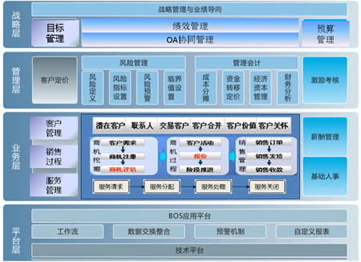

行业概述
信息服务业是指以现代科学技术为手段，通过信息的收集、生产、存贮、传输并提供信息服务的总称，是信息产业的一个重要组成部分。信息服务业作为新兴的朝阳产业，代表了知识经济发展的前沿。随着我国加入WTO，国外信息机构及信息服务业正大举进入中国市场，争夺中国信息市场。在这种形势下，要增强适应市场的能力，发挥应有的作用，信息服务行业企业就需要通过信息化系统建立一套符合企业运作实际的运营和绩效管理评估体系，提高企业的运作效率，从而保证关键绩效评估指标和企业战略目标的实现。
方案概述
金蝶K/3信息服务行业解决方案，一方面通过完整的财务管理和业务管理指标体系，帮助企业衡量企业绩效，同时，也通过战略人力资源解决方案为企业衡量内部绩效提供了完整的管理解决方案。另一方面，也提供了客户关系管理系统，帮助信息服务行业有效提供顾客满意度和营运效率。帮助信息服务企业将绩效评估和激励机制从定性转向定量，从单纯的效益评估转向综合评估，从粗放型管理转向全面知识管理，帮助企业建立一套内部运作的风险防范体系，为我国信息服务业企业实现高效运营和快速扩张奠定基础。

关键应用
有效的目标管理体系
金蝶K/3信息服务行业解决方案，提供了有效的管理门户和目标管理体系，为企业决策管理人员提供了直观的K/3 ERP系统集成应用效果，通过管理门户可以实时、全面的了解企业运营状况信息，为决策管理提供支持。而目标管理融合了当前最先进的企业绩效管理理念，通过平衡计分卡、KPI的灵活应用，贯穿企业战略实施、绩效过程管理、企业业绩衡量的全过程。
全面的资金预算管理
预算管理帮助信息服务行业企业财务人员实现全面有效的预算管理，提供面向单体企业和集团企业的预算管理系统，通过预算编制、预算调整、预算控制、绩效分析来规划经营活动，做到企业和集团经营的事前规划、事中控制和事后分析评估。资金管理帮助企业财务人员实现企业资金的整体管理与调配，提供全面的集团资金统一管理系统，以业务为中心、财务为核心，对资金计划及控制、资金结算、融资、存款、利息计算、资金报表、资金分析等进行一体化管理。
有效的风险内控管理体系
内外部的双重压力下，完善治理、强化内控成为信息服务行业企业成长过程的必修课。信息化做为强化内控的有效手段，已是不争的事实。以风险管理为导向的金蝶K/3ERP产品，基于金蝶BOS平台构建，具有随需应变、可视化与严密却不失灵活的特性，可以帮助企业将人为控制变为程序控制，实现手工条件不可能设置的控制，降低内部控制成本，提高控制效果。
一体化的财务业务体系
财务管理系统以凭证处理为主线，提供凭证处理、预提摊销、自动转账、期末调汇、结转损益等会计核算功能，还提供科目预算、科目计息、往来核算、现金流量处理等财务管理功能，同时报表系统帮助企业财务报表编制人员快速便捷地出具各种管理报表，提供报表编制、查询、审核、打印、联查和分析等业务管理功能，以及灵活、丰富的取数公式和强大的账表联查功能。为信息服务业提供准确的业务经营指标，为高效的绩效管理提供依据。
完整的绩效管理系统
信息服务业是以人为管理的核心，而如何建立起一整套科学合理的绩效管理系统，对提高信息服务企业内部最重要的资源?员工的工作积极性来说相当重要。金蝶K/3信息服务业解决方案的绩效管理帮助企业人力资源人员实现战略目标分解落实并建立绩效与薪酬关联激励，提供基于平衡计分卡、KPI、360度评估等多种绩效评估方式，支持定性目标评估和定量目标考核，以及提供部门绩效考核和个人绩效考核，支持绩效过程管理。
运营分析型的客户关系管理
信息服务业是典型的以客户核心中心经营模式。金蝶K/3信息服务业解决方案提供运营型和分析型客户关系管理，通过呼叫中心、网站、直销等形式与顾客实现互动，为前台业务流程诸如销售、市场及客服等提供支持。支持运用数据库、统计工具、数据挖掘、机器学习、商业智能和数据报告等技术，获取、分析及应用与顾客相关的各种数据信息。为信息服务行业企业规范客户服务流程，提高客户服务响应速度、服务质量，深入挖掘客户价值和潜力，提升客户满意度和和忠诚度，从而提高企业的客户服务水平和竞争力。
协同的办公服务管理体系
协同办公帮助企业员工规范和实现高效流程作业，提供传统企业内部的收发文管理和日常事务流程，支持完全可自定义的企业工作流，嵌套、并行、分支、循环等流程模式，提供严格的权限控制、流程日志和意见一览等功能。协作门户帮助企业员工实现高效协作，以流程核心为基础，提供个人主页、部门事务和系统主页等模块，同时满足信息服务企业员工个人、领导和部门内部的时时沟通的需要。